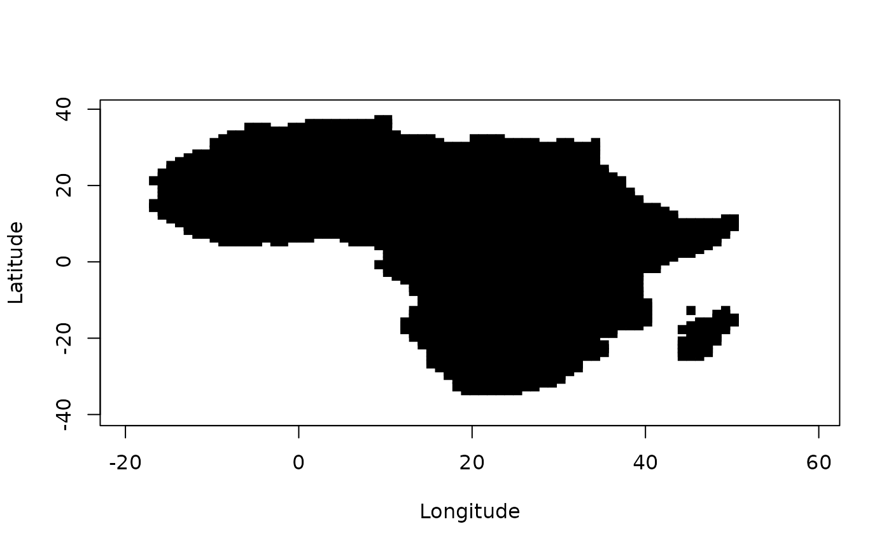

geogMask.RdgeogMask is a helper function that preprocess input for the
HiClimR via geogMask parameter.
geogMask(continent = NULL, region = NULL, country = NULL, lon = NULL, lat = NULL, InDispute = TRUE, verbose = TRUE, plot = FALSE, colPalette = NULL, pch = 15, cex = 1)
| continent |
|
|---|---|
| region |
|
| country |
|
| lon | a vector of longitudes with length |
| lat | a vector of latitudes with length |
| InDispute | a logical: should the areas in dispute be considered for
geographic masking by country? If |
| verbose | logical to print processing information if |
| plot | logical to call the plotting method if |
| colPalette | a color palette or a list of colors such as that generated
by |
| pch | Either an integer specifying a symbol or a single character to
be used as the default in plotting points. See |
| cex | A numerical value giving the amount by which plotting symbols should
be magnified relative to the |
A vector of indices for the spatial elements to be masked,
as required by HiClimR.
In some applications, a user may want to focus on an area that is a
mask-defined subset of the full dataset. For instance, the NASA Tropical
Rainfall Measuring Mission (TRMM) data covers ocean and land, while a
researcher might be interested in the precipitation variability only over
land, a country, or a list of countries (e.g., Nile Basin countries). This
masking capability is supported by the geogMask helper function.
It requires the longitude (lon) and latitude (lat) vectors
together with a string (or array of strings) to specify continent
name(s), region name(s), or country ISO3 character code(s) via
either continent, region, or country parameters. Valid
values for them can be obtained by running geogMask(). World mask data
is based on the HIU Large Scale International Boundaries (LSIB) data
(https://hiu.state.gov/data).
Hamada S. Badr, Zaitchik, B. F. and Dezfuli, A. K. (2015): A Tool for Hierarchical Climate Regionalization, Earth Science Informatics, 8(4), 949-958, doi: 10.1007/s12145-015-0221-7 .
Hamada S. Badr, Zaitchik, B. F. and Dezfuli, A. K. (2014): Hierarchical Climate Regionalization, Comprehensive R Archive Network (CRAN), https://cran.r-project.org/package=HiClimR.
Hamada S. Badr <badr@jhu.edu>, Benjamin F. Zaitchik <zaitchik@jhu.edu>, and Amin K. Dezfuli <amin.dezfuli@nasa.gov>.
HiClimR, HiClimR2nc, validClimR,
geogMask, coarseR, fastCor,
grid2D and minSigCor.
require(HiClimR) ## Load test case data x <- TestCase$x ## Generate longitude and latitude mesh vectors xGrid <- grid2D(lon = unique(TestCase$lon), lat = unique(TestCase$lat)) lon <- c(xGrid$lon) lat <- c(xGrid$lat) ## Check the valid options for geographic masking geogMask()#> ---> Checking geographic masking options...#> $continent #> [1] "Africa" "Americas" "Antarctica" "Asia" "Europe" #> [6] "Oceania" #> #> $region #> [1] "Antarctica" "Australia and New Zealand" #> [3] "Caribbean" "Central America" #> [5] "Central Asia" "Eastern Africa" #> [7] "Eastern Asia" "Eastern Europe" #> [9] "Melanesia" "Micronesia" #> [11] "Middle Africa" "Northern Africa" #> [13] "Northern America " "Northern Europe" #> [15] "Polynesia" "South America" #> [17] "South-Eastern Asia" "Southern Africa" #> [19] "Southern Asia" "Southern Europe" #> [21] "Western Africa" "Western Asia" #> [23] "Western Europe" #> #> $country #> [1] "ABW" "AFG" "AGO" "AIA" "ALB" "AND" "ANT" "ARE" "ARG" "ARM" "ASM" "ATA" #> [13] "ATF" "ATG" "AUS" "AUT" "AZE" "BDI" "BEL" "BEN" "BFA" "BGD" "BGR" "BHR" #> [25] "BHS" "BIH" "BLM" "BLR" "BLZ" "BMU" "BOL" "BRA" "BRB" "BRN" "BTN" "BVT" #> [37] "BWA" "CAF" "CAN" "CCK" "CHE" "CHL" "CHN" "CIV" "CMR" "COD" "COG" "COK" #> [49] "COL" "COM" "CPV" "CRI" "CUB" "CUW" "CXR" "CYM" "CYP" "CZE" "DEU" "DJI" #> [61] "DMA" "DNK" "DOM" "DZA" "ECU" "EGY" "ERI" "ESH" "ESP" "EST" "ETH" "FIN" #> [73] "FJI" "FLK" "FRA" "FRO" "FSM" "GAB" "GBR" "GEO" "GGY" "GHA" "GIN" "GLP" #> [85] "GMB" "GNB" "GNQ" "GRC" "GRD" "GRL" "GTM" "GUF" "GUM" "GUY" "HKG" "HMD" #> [97] "HND" "HRV" "HTI" "HUN" "IDN" "IMN" "IND" "IOT" "IRL" "IRN" "IRQ" "ISL" #> [109] "ISR" "ITA" "JAM" "JEY" "JOR" "JPN" "KAZ" "KEN" "KGZ" "KHM" "KIR" "KNA" #> [121] "KOR" "KWT" "LAO" "LBN" "LBR" "LBY" "LCA" "LIE" "LKA" "LSO" "LTU" "LUX" #> [133] "LVA" "MAC" "MAF" "MAR" "MCO" "MDA" "MDG" "MDV" "MEX" "MHL" "MKD" "MLI" #> [145] "MLT" "MMR" "MNE" "MNG" "MNP" "MOZ" "MRT" "MSR" "MTQ" "MUS" "MWI" "MYS" #> [157] "MYT" "NAM" "NCL" "NER" "NFK" "NGA" "NIC" "NIU" "NLD" "NOR" "NPL" "NRU" #> [169] "NZL" "OMN" "PAK" "PAN" "PCN" "PER" "PHL" "PLW" "PNG" "POL" "PRI" "PRK" #> [181] "PRT" "PRY" "PSE" "PYF" "QAT" "REU" "ROU" "RUS" "RWA" "SAU" "SDN" "SEN" #> [193] "SGP" "SGS" "SHN" "SJM" "SLB" "SLE" "SLV" "SMR" "SOM" "SPM" "SSD" "STP" #> [205] "SUR" "SVK" "SVN" "SWE" "SWZ" "SXM" "SYC" "SYR" "TCA" "TCD" "TGO" "THA" #> [217] "TJK" "TKL" "TKM" "TLS" "TON" "TTO" "TUN" "TUR" "TUV" "TWN" "TZA" "UGA" #> [229] "UKR" "UMI" "URY" "USA" "UZB" "VAT" "VCT" "VEN" "VGB" "VIR" "VNM" "VUT" #> [241] "WLF" "WSM" "YEM" "ZAF" "ZMB" "ZWE" #>## geographic mask for Africa gMask <- geogMask(continent = "Africa", lon = lon, lat = lat, plot = TRUE)#> ---> Checking geographic masking options... #> ---> Checking geographic masking data... #> ---> Geographic masking by continent... #> ---> Generating geographic mask map...